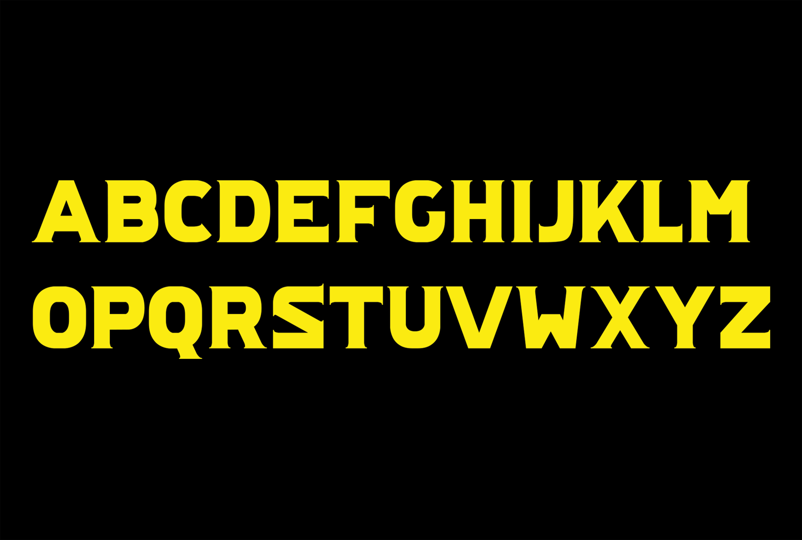

KREDERK.
Ce projet consiste en la création d'une police de caractère originale nommée "Krederk". L'objectif était de concevoir une police qui soit à la fois esthétique et fonctionnelle.
J'ai travaillé sur chaque lettre pour m'assurer qu'elles soient harmonieuses entre elles tout en ayant une identité propre.
La police Krederk est destinée à être utilisée dans divers contextes, tels que le design graphique, la publicité et l'édition. Ce projet m'a permis de développer mes compétences en typographie et en design, tout en explorant pour la première fois la conception de caractères.
Compétences :
- Recherche et analyse de polices existantes
- Esquisse et conception des glyphes
- Utilisation de logiciels de création typographique (Glyphs)
- Test et ajustement de la lisibilité et de l'esthétique
- Création d'un specimen pour présenter la police


